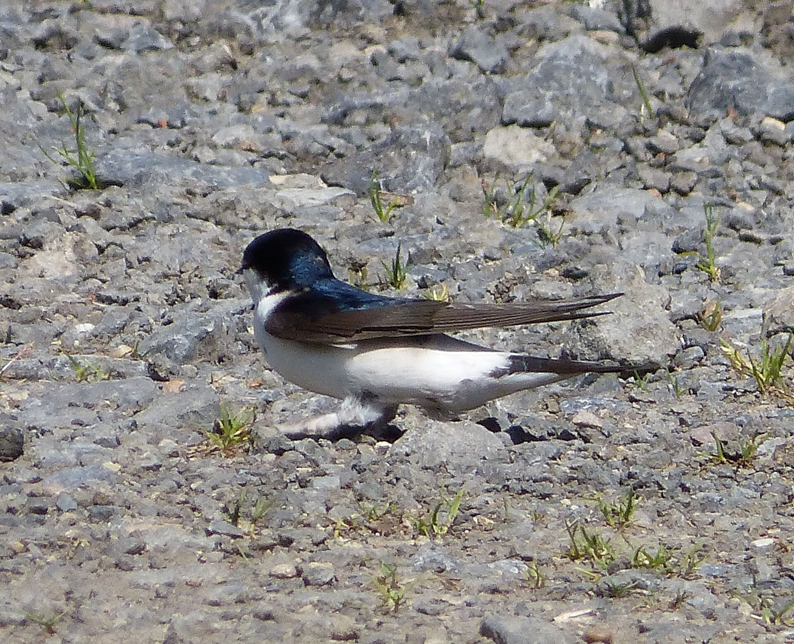
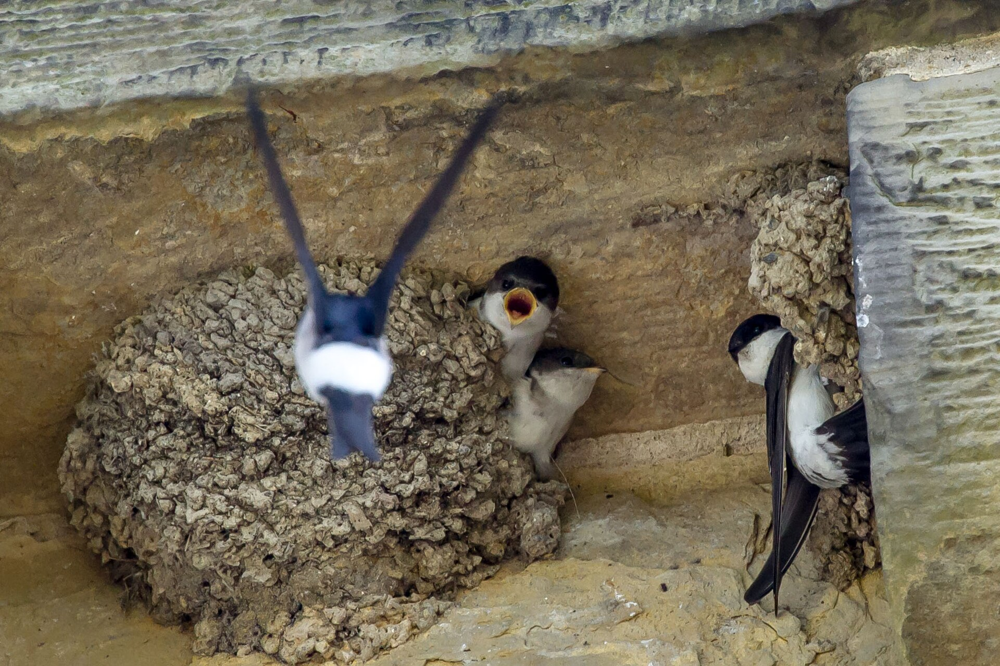
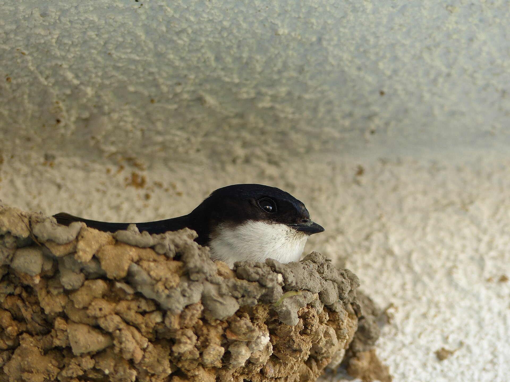
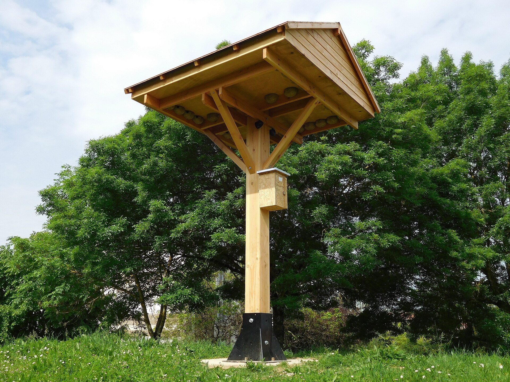
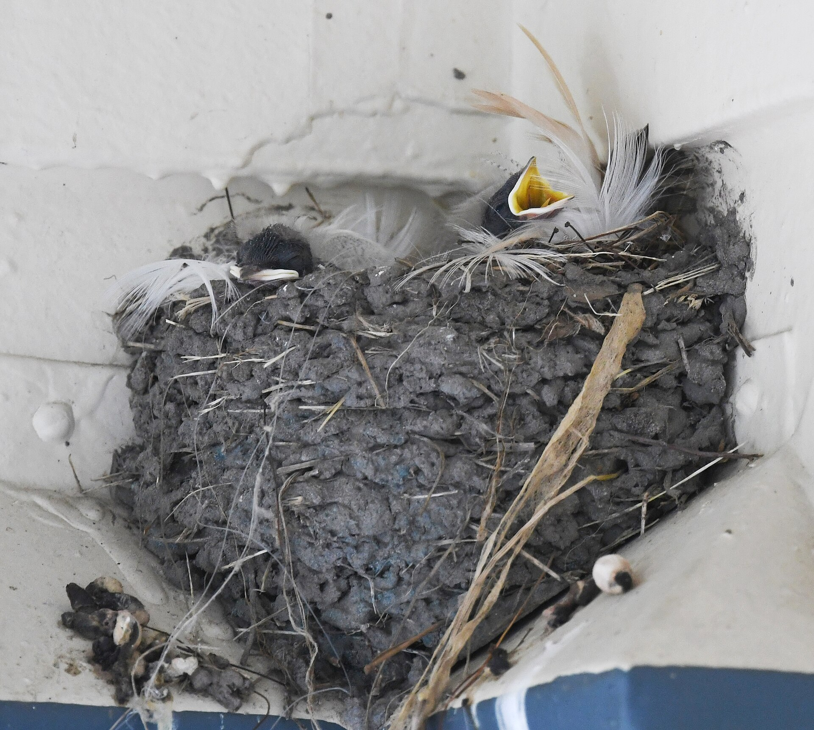

They need buildings
House martins nest under roof overhangs; barn swallows use barns, stables, hangars, garages, and semi-open spaces.
House martins and barn swallows are priority conservation species in Switzerland and Vaud. They rely on buildings, mud, flying insects, and public tolerance to keep returning each spring.
House martins nest under roof overhangs; barn swallows use barns, stables, hangars, garages, and semi-open spaces.
Smooth facades, sealed openings, paved ground, fewer insects, and renovation work make nesting harder.
Protect colonies, keep mud available, support insects, and manage droppings instead of blocking nests.
The full learning content is here on the homepage, so visitors can understand nesting, mud, insects, and urban pressure before choosing a next step.

Swallows need mud to build nests. In sealed cities, a simple clay-rich wet patch can make a real difference.

Swallows often return to former nesting places, so protecting existing sites is one of the most effective actions.
One pair of barn swallows may need around 150,000 flies, about 1 kg of food, to raise a brood.

House martins nest on facades under overhangs; barn swallows prefer barns, stables, hangars, garages, and semi-open rooms.
House martins build mud nests under roof overhangs or on rough facades. For a nest to hold, the surface must not be too smooth and the placement should be sheltered.
Barn swallows usually nest inside or partly inside buildings: barns, stables, hangars, garages, corridors, laundry rooms, and covered passages can all be used when access is available.
For new barn swallow nesting sites, a large opening helps birds discover the space. Once a nest is occupied, a smaller entrance of about 10 cm can be enough.
Because swallows are loyal to former nesting places, losing one site during renovation can affect more than a single season.
If swallows have access to soil, straw, and water near the nesting site, they can build natural nests themselves. A suitable mud area should be within about 200 m, open and flat, protected from disturbance, and made of clay-rich soil rather than sand.
Mud areas need care. During the nest-building period, roughly from mid-April to mid-June, the soil must stay moist and vegetation should be removed manually or mechanically without pesticides.
Small changes on buildings and nearby green spaces can protect nests, reduce conflict, and support urban nature. Swallows need mud, insects, and safe places to return to.
Start with your situation, then use the detailed guidance below to protect nests, reduce conflict, and plan building work responsibly.
Do not remove or block it. Reduce nuisance with droppings boards, regular cleaning, and clear communication in the building.
Record nest locations, check whether they are used, and include colonies in renovation, facade, or demolition planning.

Inspect buildings for nests, schedule work outside the breeding season, and restore access before the birds return.
Keep colony records current, identify priority zones, and use permits and public communication to prevent late conflicts.
Meadows, hedges, wetlands, orchards, permeable ground, and moist clay-rich mud zones help swallows breed successfully.

Injured adults need wildlife care. If an uninjured young bird has fallen, returning it to the nest is often best.
Swallows often return to the same nesting sites. Existing colonies should be inventoried, monitored, and considered before renovation, sale, demolition, or facade work. Protecting a known colony is usually more reliable than trying to create a new one later.
Droppings are one of the main reasons people lose tolerance. Boards installed below nests can protect walls, windows, and entrances, but they must be cleaned regularly. If they are neglected, they can create hygiene issues or even help predators reach nests.
House martins need mud to build and repair nests. A useful mud area should be close to nesting sites, open, flat, clay-rich rather than sandy, and kept moist during the main nest-building period from mid-April to mid-June.
Artificial nests can compensate for lost nesting opportunities, especially near existing colonies. They are not a universal fix: placement, facade conditions, overhangs, disturbance, and maintenance all influence whether birds use them.
Buildings should be checked for nests before work begins. If active nests are present, works should normally be planned outside the breeding season, with access restored before birds return. Replacement nests should be planned early when unavoidable works affect nests.
Communes can connect building permits, public buildings, inventories, and resident communication. A local plan can define places to maintain, reinforce, or create nesting opportunities instead of relying on isolated one-off measures.
A useful mud area should be within about 200 m of nesting sites, open, flat, protected from disturbance, and clay-rich rather than sandy. It must stay moist during the main nest-building period.
Boards are most useful when placed about 60 cm below nests and wide enough to catch droppings. They reduce soiling, but they only work if someone can access and clean them regularly.
Artificial nests are more promising near existing colonies or in known priority areas. Martin towers can be expensive and are not a guaranteed replacement for colonies already using buildings.
Barn swallows usually arrive in March and leave around October. House martins usually arrive in April and leave by the end of September. Renovation is ideally planned between late September and early April.
Swallows and their nests are protected. Check for nests before renovation, demolition, or facade work. If active nests are present, plan work outside the breeding season and restore access before birds return.
Recommended work window: late September to early April